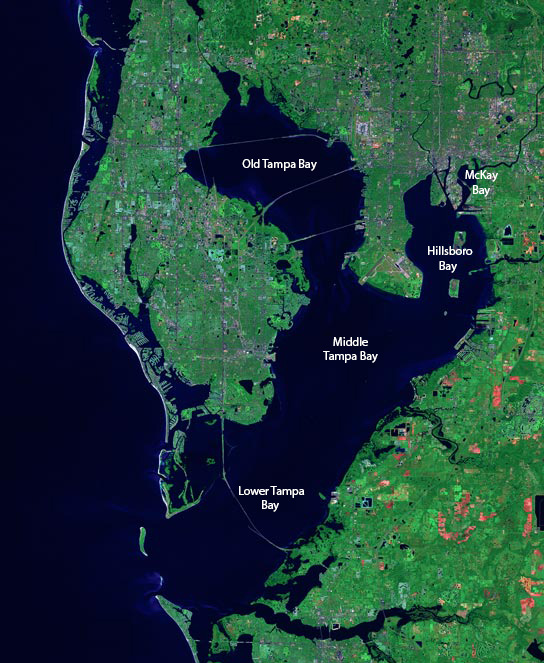

Tampa Bay is a large natural harbor and shallow estuary connected to the Gulf of Mexico on the west-central coast of Florida, comprising Hillsborough Bay, McKay Bay, Old Tampa Bay, Middle Tampa Bay, and Lower Tampa Bay. The largest freshwater inflow into the bay is the Hillsborough River, which flows into Hillsborough Bay in downtown Tampa. Many other smaller rivers and streams also flow into Tampa Bay, resulting in a large watershed area.
The shores of Tampa Bay were home to the Weedon Island Culture and then the Safety Harbor Culture for thousands of years. These cultures relied heavily on Tampa Bay for food, and the waters were rich enough that they were one of the few Native American cultures that did not have to farm. The Tocobaga was likely the dominant chiefdom in the area when Spanish explorers arrived in the early 1500s, but there were likely smaller chiefdoms on the eastern side of the bay which were not well documented. The indigenous population had been decimated by disease and warfare by the late 1600s, and there were no permanent human settlements in the area for over a century. The United States took possession of Florida in 1821 and established Fort Brooke at the mouth of the Hillsborough River in 1824.
The communities surrounding Tampa Bay grew tremendously during the 20th century. Today, the area is home to about 4 million residents, making Tampa Bay a heavily used commercial and recreational waterway and subjecting it to increasing amounts of pollutants from industry, agriculture, sewage, and surface runoff. The bay's water quality was seriously degraded by the early 1980s, resulting in a sharp decline in sea life and decreased availability for recreational use. Greater care has been taken in recent decades to mitigate the effects of human habitation on Tampa Bay, most notably upgraded sewage treatment facilities and several sea grass restoration projects, resulting in improved water quality over time. However, occasional red tide and other algae blooms have caused concern about the ongoing health of the estuary.
The term "Tampa Bay" is often used as shorthand to refer to all or parts of the Tampa Bay area, which comprises many towns and cities in several counties surrounding the large body of water. Local marketing and branding efforts (including several professional sports teams, tourist boards, and chambers of commerce) commonly use the moniker "Tampa Bay", furthering the misconception that it is the name of a particular municipality when this is not the case
 OriginTampa Bay formed approximately 6,000 years ago as a brackish drowned river valley type[ estuary with a wide mouth connecting it to the Gulf of Mexico. Prior to that time, it was a large fresh water lake, possibly fed by the Floridan Aquifer through natural springs.Though the exact process of the lake-to-bay transformation is not completely understood, the leading theory is that rising seas levels following the last ice age coupled with the formation of a massive sink hole near the current mouth of the bay created a connection between the lake and the gulf
EcologyTampa Bay is Florida's largest open-water estuary, extending over 400 square miles (1,000 km2) and forming coastlines of Hillsborough, Manatee and Pinellas counties. The freshwater sources of the bay are distributed among over a hundred small tributaries, rather than a single river.The Hillsborough River is the largest such freshwater source, with the Alafia, Manatee, and Little Manatee rivers the next largest sources. Because of these many flows into the bay, its large watershed covers portions of five Florida counties and approximately 2,200 square miles (5,700 km2).
The bottom of Tampa Bay is silty and sandy, with an average water depth of only about 12 feet (3.7 m). The relatively shallow water and tidal mud flats allow for large sea grass beds, and along with the surrounding mangrove-dominated wetlands, the bay provides habitat for a wide variety of wildlife. More than 200 species of fish are found in the waters of the bay, along with bottlenose dolphins and manatees, plus many types of marine invertebrates including oysters, scallops, clams, shrimp and crab. More than two dozen species of birds, including brown pelicans, several types of heron and egret, Roseate spoonbills, cormorants, and laughing gulls make their year-round home along its shores and small islands, with several other migratory species joining them in the winter. The cooler months are also when warm-water outfalls from power plants bordering the bay draw one out of every six West Indian manatees, an endangered species, to the area
Fun Facts about Tampa Bay FL
- Wild chickens roam the streets of Ybor City FL and they are protected by law
- Ybor City FL was once the cigar making capital of the world
- Cuban sandwiches in Tampa are amazing. Probably because they were invented here
- Ever wondered where the largest Spanish restaurant in the world is? Say hello to the Columbia Restaurant in Ybor City FL
- Manatees Loves Tampa Bay
- Lightning Capital of the World
- The World's biggest Pirate invasion happens every year